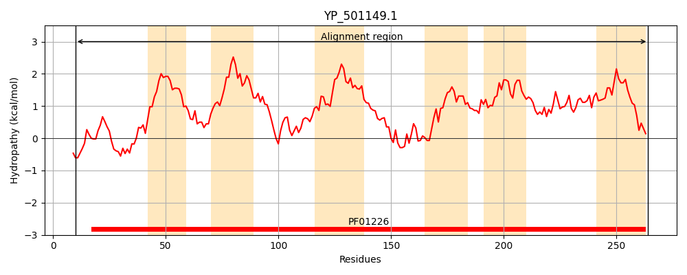
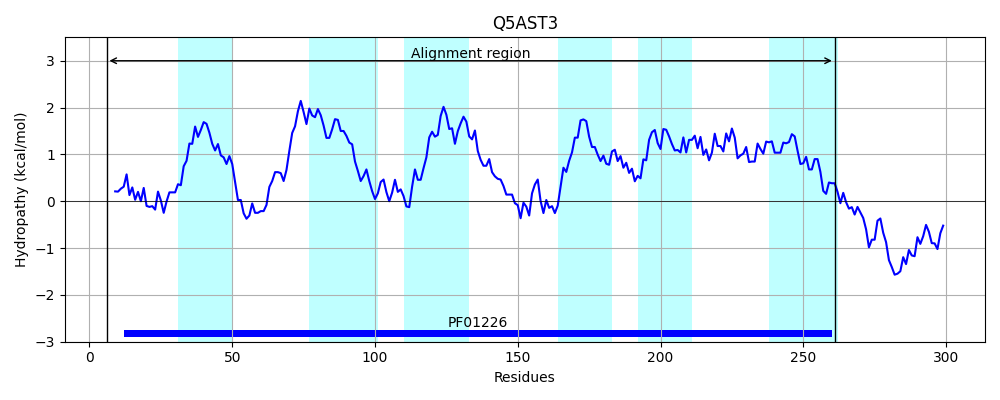
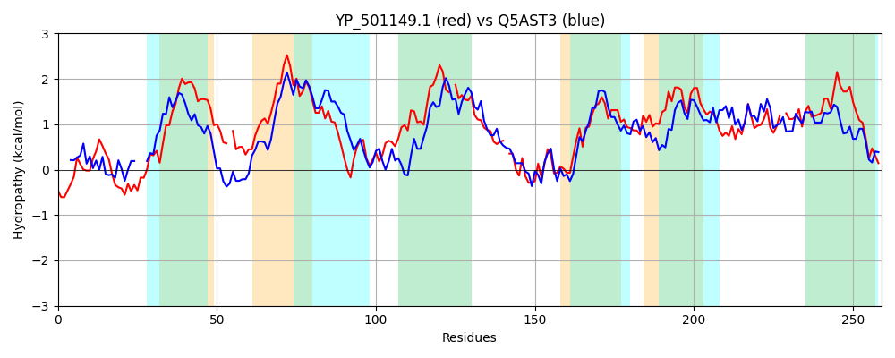

Hit Accession: Q5AST3
Hit TCID: 1.A.16.2.2
Hit Description: gnl|BL_ORD_ID|14273 gnl|TC-DB|Q5AST3|1.A.16.2.2 Formate/nitrate family transporter (Eurofung) OS=Emericella nidulans (strain FGSC A4 / M139) GN=AN8647.2 PE=4 SV=1
Mach Len: 259
e:0.000000
Query TMS Count : 6
Hit TMS Count: 6
TMS-Overlap Score: 4.900000
Predicted Substrates:CHEBI:71263;nitrate
BLAST Alignment:
Score: 278 , Bit scores: 111 bits, E-value: 4.8e-29, Alignment length: 259, Percentage identity: 28
Query: 10 DTYSTGAIVDSISSSVQMKQVMVQQTPGRYMLKAMMAGFLLSIVTVFMFGIKTQ-FASTHVDGLINLMGAIAFSLGLILVVLTNSELLTSNFMYFTVGWYYKVVSVKKMTWILLYCFLGNILGG-FVLFFLMKFAHVMTPE-MTQALTALVQKKTVDSTWLNIFTKGIFCNFFINIGIFISMQFKGGLTKAFFIACGVVVFVYMGYEHVVFNAGLYAGMVFFNLDAVS-WLHVLKNIVFAFLGNFVGGGIFVGLVYAFL 264
D Y+ +V+ +S + +K M + L ++ AG LL++ + + + GLI + A+ F GL+L++LT ++L T +FM+ TV ++ +S KM F GN+ G FV+ + + V + + A+ + KK V + +IF +GI CN+ + + F+ +Q + +K I + FV +G++HVV N ++ + +S L++ K I+ LGN VGGG+FVG Y ++
Sbjct: 6 DAYTPLEVVEFVSRAGSVKGHMRLD---KIFLSSLSAGCLLALACGTTLSTNASPWFTENAPGLIRTISALVFPYGLVLIILTGADLCTGSFMFTTVAALHRRLSWPKMLLHWFITFWGNLCGSLFVVAIIFGYGEVFSADPFRSAVISFATKKQVTPEFHSIFLRGIGCNWLVCLACFLGLQGRDMASKIIGIWLPIYAFVSLGFDHVVANMTFIPLAIWLDAPGISVGLYIWKGIIPTLLGNIVGGGLFVGTYYWYM 261 | Protein Hydropathy Plots: |
|---|
|  |  |
Pairwise Alignment-Hydropathy Plot:
|
|---|
|  |